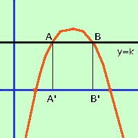

|
Data la parabola y= - x2 + 6x - 5 indicate con A e B le intersezioni fra la retta y = k e la parabola e con A' e B' le proiezioni di A e B sull'asse delle x, determinare il valore di k perche' il perimetro del rettangolo AA'B'B abbia valore 10 unita' del piano  il metodo generale per risolvere questi problemi e' quello di procedere come se al posto del parametro ci fosse un numero qualunque: una volta trovato il dato che viene posto come condizione si uguaglia tale dato con quello fornito dal problema: si ottiene un'equazione che, risolta, ci da' il valore del parametro cercato a destra la rappresentazione grafica che in questi casi e' molto utile Rappresentazione grafica della parabola in questo caso il dato e' il perimetro del rettangolo AA'B'B. Per trovare il perimetro devo trovare le misure dei lati, quindi devo trovare le coordinate delle intersezioni fra la retta y=k e la parabola y= - x2 + 6x - 5 Faccio il sistema fra la retta e la parabola y = k y = k -------- risolvo l'equazione di secondo grado ed ottengo x = 3 + Da notare che per la realta' della radice il valore di k deve essere minore di 4 come vedi anche dalla figura: per valori maggiori di 4 la retta passa sopra la parabola senza tagliarla quindi avremo, ricordando che A' e B'hanno la stessa x di A e B e che A si trova piu' a sinistra e quindi vi assoceremo il valore con il meno davanti alla radice A=(3 - A'=(3 - Quindi avremo (per la misura dei segmenti, essendo orizzontali o verticali, basta fare la differenza fra le coordinate omonime di valore diverso A A' = k - 0 = k A' B' = 3 + = 3 + di conseguenza il perimetro del rettangolo AA'BB' sara' 2 A'A + 2 A'B' = 2 k + 4 ora devo uguagliare i valori del perimetro trovato con i valori dati 2 k + 4 Per renderla piu' semplice divido tutti i termini per 2 k + 2 E' un'equazione irrazionale, devo isolare la radice ed elevare al quadrato 2 4 4(4-k) = 25 - 10k + k2 16 - 4k = k2 - 10k + 25 k2 - 10k + 25 + 4k - 16 = 0 k2 - 6k + 9 = 0 Risolvo ed ottengo calcoli nota x = 3 soluzione doppia devo vedere se la soluzione e' accettabile: sostituisco il valore 3 all'equazione di partenza 3 + 2 3 + 2 = 5 5=5 la soluzione x=3 e'accettabile Quindi avremo che il rettangolo ha perimetro 10 quando il valore di k e' 3 |